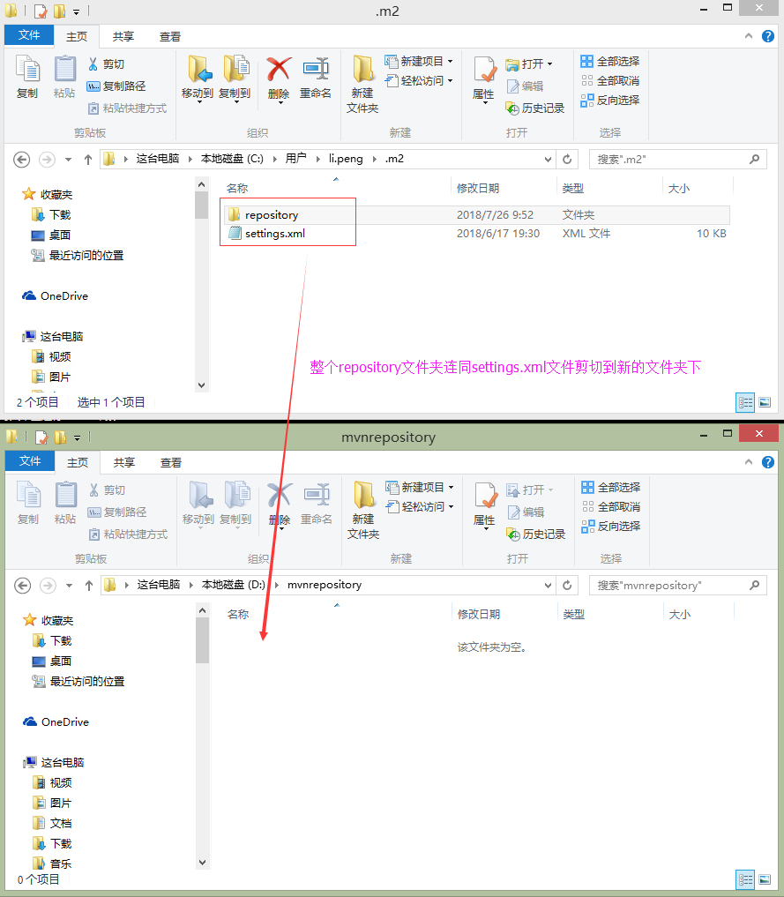
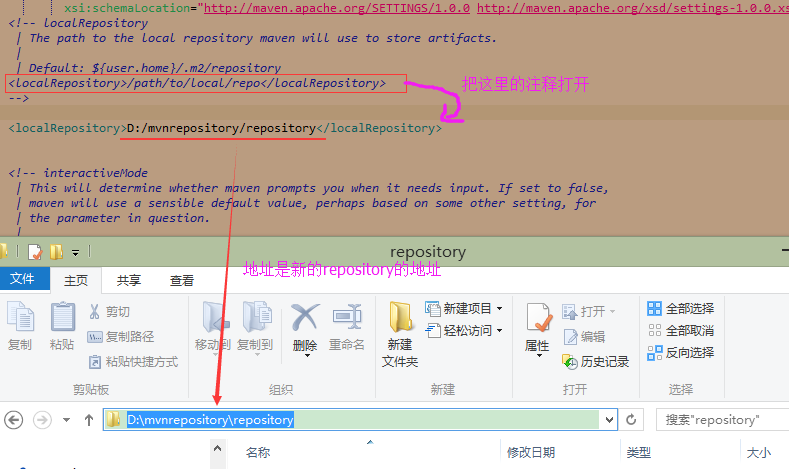
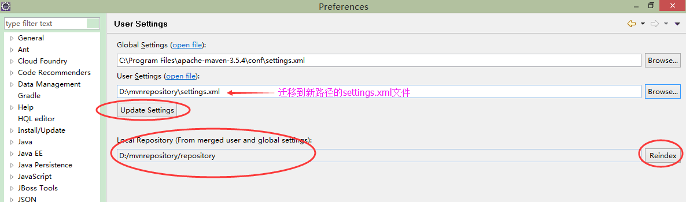

maven的仓库分类
maven的仓库分为两种：本地仓库和远程仓库
本地仓库：就是用户本地电脑上用来存放依赖包（通常为jar包）和maven插件的文件夹，默认为~/.m2/repository
远程仓库：除了本地仓库外的其它仓库都是远程仓库，包括中央仓库（目前为https://repo.maven.apache.org/maven2）、私服
将默认的本地仓库（~/.m2/repository）迁移到其它路径下
第一步：将~/.m2文件夹下的整个repository文件夹连同maven用户配置文件settings.xml剪切到新的路径下

第二步：修改maven用户配置文件settings.xml文件

第三步：修改maven用户配置文件settings.xml文件
